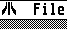

Emulator ports
Ports of Hatari and SimCoupe to RISC OS.
Emulation
 Parent directory
Parent directoryHAT080.ZIP
01 Sep 2006 851 Kbytes
HAT090.ZIP
26 Sep 2006 1160 Kbytes
 HAT80SRC.ZIP
HAT80SRC.ZIP
01 Sep 2006 1073 Kbytes
HAT90SRC.ZIP
26 Sep 2006 1182 Kbytes
Hatari095.ZIP
28 Jun 2007 1223 Kbytes
Hatari100p.ZIP
28 Mar 2008 1334 Kbytes
SimCoupe100.ZIP
09 Aug 2007 446 Kbytes